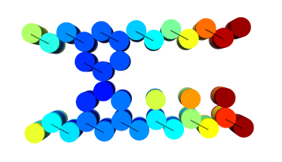

DNA mismatch base pair
A mismatched base pair occurs when a sequence is paired with a sequence that is partially complementary for binding to desired chains, but not unintended chains. When chains are joined into two strands, there are many combinations that complement each of the chains; accordingly, they are linked and the combination is intentionally reduced to prevent combining. For example, strand 1 and strand 2, which are unwanted bonds, replacement with base sequences that are partially not complementary results in a decrease in complementary portions, reducing binding.

Figure 1:
Design of DNA origami
{kind=link}
Figure 2:
This structure is a combination of a DNA Walker and DNA origami digitized in plate form. The Walker moves in one direction so that the connected plate-like DNA origami moves in a sliding manner (Figure 2). Furthermore, since the amount of movement of the structure depends on the amount of movement of the Walker, it can be adjusted. A design drawn using caDNAno [1] demonstrates this point. Figure 3 shows a structure (referred to as a roof) in which a walker is connected to a plate-like DNA origin. Figure 4 shows a structure (referred to as a floor) in which a single-stranded DNA serving as a foot of the Walker connected to a plate-like Origami. By combining these concepts, we believe that it is possible to realize a structure of DNA that can control the amount of movement by an input (Figure 5). Movie 1 is a moving image simulated by Cando [2] on Figure 5. The ideal is that the behavior in liquid is as shown in Figure 5, but floor and roof lack stability in liquid from Movie 1. We would like to improve this by redesigning the design.
{kind=link}
{kind=link}
{kind=link}
Figure 5:
Movie 1: CanDo simulation image
Reference
[1] caDNAno:http://cadnano.org/
M. Douglas, Adam H. Marblestone, Surat Teerapittayanon, Alejandro Vazquez, George M. Church, William M. Shih. Rapid prototyping of 3D DNA-origami shapes with caDNAno. Nucleic Acids Research, 37, 5001-5006 , 2009
[2] CanDo:http://cando-dna-origami.org/
C.E. Castro, F. Kilchherr, D.N. Kim, E.L. Shiao, T. Wauer, P. Wortmann, M. Bathe, H. Dietz: A primer to scaffolded DNA origami, Nature Methods, Vol. 8, pp. 221-229, 2011.